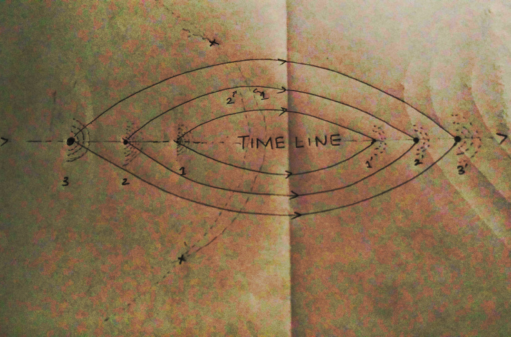

FEBRUARY 5, 2017 BY Sai Sabhareesh
The concept of Choice and the concept of Destiny are definitely antonyms. Choosing allows you to plan, while Destiny is just pre-planned.
Choice is quite fascinating as it offers an illusion as well as a reality at the same time. At least, that is what is thought.
Erwin Schrödinger hypothesized an experiment in 1935 . The experiment consists of a cat and a minute amount of radioactive material isolated inside an opaque box. This experiment has famously come to be known by the name “Schrödinger’s cat".
Once the experiment was initiated, many interpretations come into play mainly considering the superpositions of the wave function (psi) of the cat. On one hand, the small amount of radioactive atom decays and releases radiation due to which the cat dies. On the other hand, there is no decay and the cat lives.
The moments before the box is opened, are crucial as they are the moments when the interpretations rain down. The first interpretation, Copenhagen Interpretation talks about the collapse of one of the wave functions, when an external observation takes place. This was dismissed earlier by Einstein as he didn’t believe that an observation by, but a speck, could in any way affect a wave function as the wave function was, in all possible aspects, a value of reality.
The next three theories are important and I aim to combine the three of them in order to throw a brighter light on the poor cat.
Many Worlds Theory and Consistent Histories Interpretation says that, at the end of one hour when the atomic decay has an equal chance of decaying and not decaying, the box itself splits into two incoherent realities, in one of which the cat is dead and in the other, very much alive. These two realities are incoherent as they cannot interact with each other and the observers from both the realities have no clue what happens in the other reality.
The splitting of realities for the cat, has changed the UNIverse into a MULTIverse.
Ensemble Interpretation trivializes the concept of a single isolated experiment to affect the Multiverse in any way and hence makes such a cat experiment, a non-issue.
Relational Interpretation perceives no difference between the different observers present for determining the coherent reality, but rather talks about Time Evolution, of how the cat is the first observer and then comes the experimenter. According to Quantum mechanics, the concept of time evolution is relatively new and requires a few modifications.
In order to combine these three interpretations, it’s necessary to talk about a famous theory: The Butterfly Effect.
The Butterfly Effect is a direct effect of the Chaos Theory. Chaos Theory follows the Thermodynamic rule that all systems tend towards randomness. The Butterfly Effect is the name given to how a small disturbance can lead to a large effect after a period of time. It’s called thus because of the metaphorical example provided by Edward Lorenz where a hurricane is formed because of minor perturbations caused by the flapping of the wings of a butterfly.
This single image serves as the most important part of this whole article.
Some assumptions and facts need to be kept in mind, for understanding this image.
The strength of an ED should and can be measured only by the amount of nuclei directly affected by the event, as inside the nucleus of an atom, constant fission and fusion take place and the differential relations between these two processes determine the release of sub-atomic particles in the immediate environment. The release can lead to major implications.
Hence, a larger event (ED-3) or more precisely, a larger choice in the form of a larger ED will lead to splitting of the reality into two alternative realities that are more away from each other in the Multiverse than the alternative realities caused due to ED-2 or ED-1.
Starting from that one event, Butterfly Effect will elevate the chaos and let it reach the peak of inter-reality distance, something similar to the game played with Dominoes.
The alternative realities are a form of the Multiple Worlds Hypothesis. The Butterfly Effect serves to rationalize the Ensemble Interpretation. The facts that none of the observers in either reality can ever know about the splitting and that each realities have their own timelines, rationalize the Relational Interpretation as all the observers are themselves, unwittingly, part of the whole “Multiverse Experiment”.
Once the peak in splitting of the alternative realities is reached, the split worlds will tend to come back together due to eventual dampening or weakening of the Butterfly Effect.
In the given image, quite interestingly, due to the omnipresent timeline, ED-1-Prime will fall behind ED-2-Prime which will fall behind ED-3-Prime and hence, ED-1P will influence the events after it (ED-2P and ED-3P), contrary to their counterparts before the splitting.
Hence, many choices may lead to the same point but occurrence of that point in the timeline is determined by the right choice at the right time.
Make your choices well, and the Multiverse will reward you.